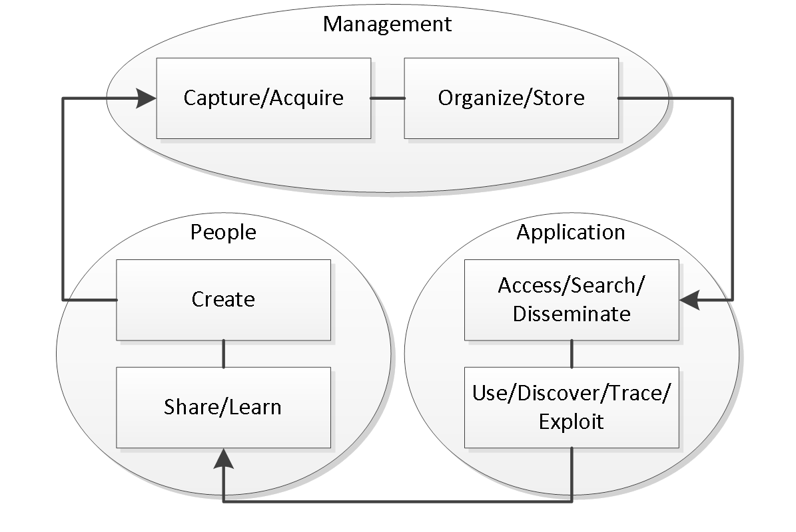

This family of documents defines the Open Services for Lifecycle Collaboration Knowledge Management and Definition specification, also known as OSLC KM. These documents collectively define the OSLC KM 1.0 specification. This specification supports key REST APIs for Knowledge Management systems. OSLC KM 1.0 takes an open, loosely coupled approach to specific lifecycle integration scenarios. The scenarios and this V1.0 specification were created by the Knowledge Reuse Group (UC3M) and The Reuse Company (TRC).
This specification builds on the Open Services for Lifecycle Collaboration (OSLC) Core v2.0 Specification to define the resources, properties and operations supported by an OSLC Requirements Definition and Management (OSLC-RM) provider.
Knowledge Management resources include Concepts, Concepts Collections, Relationships, Relationships Collections, Semantics, Semantics Collections, Artifacts, Artifacts Collections, Metaproperties and Metaproperties Collections and supporting resources defined in the OSLC Core specification. The properties defined describe these resources and the relationships between resources. Operations are defined in terms of HTTP methods and MIME type handling. The resources, properties and operations defined do not form a comprehensive interface to Knowledge Definition and Management, but instead target specific integration use cases.
Notation
The key words “MUST”, “MUST NOT”, “REQUIRED”, “SHALL”, “SHALL NOT”, “SHOULD”, “SHOULD NOT”, “RECOMMENDED”, “MAY”, and “OPTIONAL” in this document are to be interpreted as described in RFC2119. Domain name examples use RFC2606.
You need to have a custom SotD paragraph. Maybe give a succinct description of your spec's
status.
Introduction
The creation and spreading of organization’s knowledge is a crucial activity in today’s knowledge economy. Knowledge is becoming a commodity that is embedded in products, business or manufacturing processes and it is also embedded in the tacit knowledge of employees. Thus, knowledge is a kind of new intellectual asset that can be used to transform a simple organization in a learning organization, creating a real collaborative environment, reducing costs and time to market, generating competitive advantage and taking the most of existing tools and techniques to improve the daily work activities. Knowledge as a kind of asset includes also some relevant characteristics.
- Use of knowledge does not consume it.
- Transfer of knowledge does not imply losing it.
- Knowledge is abundant; the problem lies on the proper use and exploitation.
- Much of an organization’s valuable knowledge walks out the door at the end of the day.
In this sense knowledge management, as a concept, has been widely studied, it was initially defined in [2] as the process of applying a systematic approach to the capture, structuring, store, management and dissemination of knowledge pieces throughout an organization to work faster, reuse best practices and reduce costs. Building on the previous definitions, other valuable definitions can be found in [3], [4], [5] ,[6] or [7]. Although it is hard to draw big differences among the different approaches and definitions, it is possible to extract a common agreement on the processes and on the needs to share data, information and knowledge within the organization, see Figure 1.
In our opinion, based on the experience and on existing works, the next underlying necessities are considered the cornerstone to successfully address the challenge of taking the most of the knowledge generated in a business process:
- Representation of every piece of knowledge under a common and shared data model.
- Interoperability and integration between processes.
- Other issues regarding provenance of information, graphical representation of every knowledge item or common services that can be implemented on top of these knowledge items, are other key points to address in a knowledge-based environment to develop a real and holistic knowledge-based strategy.

Figure 1: Common processes in Knowledge Management, adapted from [8].
In this sense, one of the cornerstones to provide the proper knowledge management services lies on the selection of an adequate knowledge representation paradigm. After a long time [9], this problem still persists since the choice of a suitable representation format (and syntax) can be reached in several ways. Obviously, different types of knowledge require different types of representation [10] [11] including a type of inference process and a target type of dynamic system. In this light, expressions, rule-based systems, regular grammars, semantic networks, object-oriented representations, frames, intelligent agents or case-based models to name a few are some of the main approaches to information and knowledge modeling.
More specifically, knowledge management implies the standardization of data and information, that is, any bit of information must be structured and stored for supporting other application services, creating an impedance mismatch between the system and the outside world. In this sense, semantic networks seem to be a very good candidate to represent any general knowledge item with the aim of describing and linking different types of information using relationships. In particular, two main approaches can be highlighted for the purpose of knowledge representation (input/output interface and internal representation in the context of Systems Engineering):
- The Resource Description Framework [12] (RDF) is a framework for representing information resources in the Web using a directed graph data model. The core structure of the abstract syntax is a set of triples, each consisting of a subject, a predicate and an object. A set of such triples is called an RDF graph. AN RDF graph can be visualized as a node and directed-arc diagram, in which each triple is represented as a node-arc-node link. Assume there are a pairwise disjoint unlimited sets I (IRIs- Internationalized Resource Identifier), B (Blank nodes) and L (Literales). A triple (s,p,o) ε (I∪B) × I × (I ∪ B ∪ L) is called an RDF triple. In this triple, s is the subject,p the predicate and o the object. According to this definition an RDF triple encodes an RDF statement, a simple logical expression and an RDF graph is the conjunction (logical AND) of its triples. An IRI within an RDF is a UNICODE string to uniquely represent an information resource. A blank node is a local resource identified by an IRI and a literal in an RDF graph consists of two main elements:
- a lexical form, being a UNICODE string, a data type IRI, being an IRI to identifying a data type that determines how the lexical form maps to a literal value and if and only if the data IRI is rdf:langString and
- a non-empty language tag.
RDF has been used as underlying data model for building RDFS/OWL ontologies, gaining momentum in the web-based environment due to the explosion of the Semantic Web and Linked Data initiatives that aim to represent and exchange data (and knowledge) between agents and services under the web-based protocols.
-
The RSHP (RelationSHip, pronounced arship.) knowledge representation model [13] [14] is a universal representation schema for representing all kinds of documents/models/resources produced by industrial organizations using a conceptual graph model. RSHP is based on the ground idea that whatever information can be described as a group of relationships between concepts. Therefore, the leading element of an information unit is the relationship. For example, Entity/Relationship data models are certainly represented as relationships between entity types; software object models can also be represented as relationships among objects or classes; in the process modeling area, processes can be represented as causal/sequential relationships between sub-processes. Moreover, UML or SysML meta-models can also be modeled as a set of relationships between meta-model elements. RSHP also includes a repository model to store information and relationships with the aim of reusing all kind of knowledge chunks. Furthermore, free text information can certainly be represented as relationships between terms by means of the same structure. Indeed, to represent human language text, a set of well-constructed sentences, including the subject+verb+predicate (SVP) should be used. The SVP structure can be then considered as a relationship typed V between the S and the predicated P. More specifically, the RSHP formal representation model, see Figure 2 , is based on the following principles:
- The main description element is the relationship since it is the element in charge of linking knowledge elements.
- A Knowledge Element (KE) is an atomic knowledge component that appears into an artifact and that is linked by one or more relationships with other KEs to build information. It is defined by a concept, and it can also be an artifact (an information container found inside a wider artifact). A concept is represented by a normalized term (a keyword coming from a controlled vocabulary, or domain). Artifacts are knowledge containers of KEs and their relationships.
In RSHP, the simple representation model for describing the content of whatever artifact type (requirements, risks, architectural models, physical models, tests, maps, text docs or source software code) should be: RSHP representation for artifact α = i_α = {(RSHP_1 ),(RSHP_2 ),…,(RSHP_n )} where every single RSHP is called RSHP-description and must be described using KE. One important consequence of this representation model is that there is no restriction to represent a particular type of knowledge. Furthermore, RHSP has been widely used as underlying information model to build general-purpose indexing and retrieval systems, domain representation models [14], quality assessment of requirements and knowledge management tools such as knowledgeMANAGER [15]

Figure 2: The RSHP representation model using UML.
Discussion
As a summary of both approaches, Table 1 shows the main characteristics and capabilities that can be found in RDF and RSHP with special focus on those regarding knowledge management and, more specifically knowledge representation. Nevertheless, the main difference lies on the expressivity, the underlying data model and the operations they support:
- RDF is based on a directed graph and can only represent binary relationships (unless reification and blank nodes are used) while RSHP is based on an undirected graph and it can natively represent N-ary relationships.
- RDF is built on two main concepts: resources and literals. Nevertheless, a literal value cannot be used as the subject of an RDF triple. Although this issue can be overcame using a blank node (or even reification) and the property rdf:value, it also adds extra complexity for agents that are going to generate and process RDF. In RSHP it is possible to create a relationship between a literal value (a knowledge element) as another resource.
- Although RDF provides the concept of container to link a resource to a set of elements (rdf:Bag, rdf:Seq or rdf:Alt), a property linking to a container does not intrinsically mean composition or aggregation that is very useful when specifying the structure of a work product. On the other hand, RSHP representation model provides constructors to express these kind of relationships.
- There is also a lack of tools natively working on RDF. General speaking, RDF was conceived to exchange information over the web so, although some RDF repositories can provide capabilities for indexing and searching RDF resources through an SPARQL interface, the experience has demonstrated that most of times RDF is translated into the native data model of a tool. Thus, the possibility of supporting cross-cutting services such as semantic indexing and retrieval processes is constrained by the native capabilities and data models of third-party tools.
- Other minor differences such as target design and use, underlying semantics, query language and storage are also relevant but somehow compatible.
In addition to these points, it is also necessary to remark that RDFS (RDF Schema) and OWL (Ontology Web Language) were defined as frameworks to provide constructors or primitives to design formal ontologies (with some underlying logics) that can be serialized in RDF. However, shapes or schemes for managing RDF as a data model (not as a set of logical statements) are still under development (see row “Validation” in Table 1).
Motivation and Objectives
That is why a combination of the aforementioned approaches can create the proper environment for knowledge management using RSHP as a common data model to provide advanced services on knowledge management due to its further development and better fit to work-products produced in industry and RDF as input/output interface for exchanging data due to its well-known dissemination. To do so, two main operations should be designed and implemented:
- Transform the RSHP metamodel into an RDF-based vocabulary or more specifically, into an OSLC Resource Shape. For instance, OSLC has been designed to exchange data between two agents in the same specification but cooperation of agents to support collaborative engineering among different specifications is still open. Furthermore, the type of information that can be exchanged through OSLC is restricted to a set of specifications to represent and serialize knowledge as RDF. Thus, if there is no RDF vocabulary or OSLC Resource Shape to model a type of information, RHSP can be used instead.
- Create a set of mappings to represent any piece of RDF in RSHP (external to internal representation). Thus, it is possible to import any kind of existing RDF data source into RSHP (backward compatibility).
Terminology
Blah blah blah...
Base Knowledge Management
Compliance
| Requirement |
Level |
Meaning |
| Unknown properties and content |
MAY / MUST |
OSLC services MAY ignore unknown content and OSLC clients MUST preserve unknown content |
| Resource Operations |
MUST |
OSLC service MUST support resource operations via standard HTTP operations |
| Resource Paging |
MAY |
OSLC services MAY provide paging for resources but only when specifically requested by service consumer |
| Partial Resource Representations |
MUST / MAY |
OSLC services MUST support request for a subset of a resource's properties via the oslc.properties URL parameter retrieval via HTTP GET and MAY support via HTTP PUT |
| Partial Update |
MAY |
OSLC services MAY support partial update of resources using patch semantics |
| Service Provider Resources |
MAY / MUST |
OSLC service providers MAY provide a Service Provider Catalog and MUST provide a Service Provider resource |
| Creation Factories |
MUST / MAY |
OSLC service providers MUST provide at least one creation factory resource for concepts, relationships, metaproperties, semantics and artifacts and MAY provide creation factory resources for collections of the aforemetnioned resources |
| Query Capabilities |
MUST |
OSLC service providers MUST provide query capabilities to enable clients to query for resources |
| Query Syntax |
MUST |
OSLC query capabilities MUST support the OSLC Core Query Syntax |
| Delegated UI Dialogs |
MUST |
OSLC Services MUST offer delegated UI dialogs (for both creation and selection) specified via service provider resource |
| UI Preview |
SHOULD |
OSLC Services SHOULD offer UI previews for resources that may be referenced by other resources |
| HTTP Basic Authentication |
MAY |
OSLC Services MAY support Basic Authentication and SHOULD only do so only over HTTPS |
| OAuth Authentication |
MAY |
OSLC Services MAY support OAuth and MAY indicate the required OAuth URLs via the service provider resource |
| Error Responses |
MAY |
OSLC Services MAY provide error responses using Core defined error formats |
| RDF/XML Representations |
MUST |
OSLC services MUST support RDF/XML representations for OSLC Defined Resources |
| XML Representations |
MUST |
OSLC services MUST support XML representations that conform to the OSLC Core Guidelines for XML |
| JSON Representations |
MAY / MUST |
OSLC services MAY support JSON representations; those which do MUST conform to the OSLC Core Guidelines for JSON |
| HTML Representations |
MAY |
OSLC services MAY provide HTML representations for GET requests |
Specification Versioning
See Core Specification Version 2.0 - Specification Versioning.
Service providers that support the resource formats and services in this specification MUST add an HTTP response header of OSLC-Core-Version with a value of 2.0. Consumers SHOULD request formats and services defined in this document by providing a HTTP request header of OSLC-Core-Version with a value of 2.0. See section below on Version Compatibility with OSLC RM 1.0 Specifications.
This specification reserves, for possible future use, the use of the HTTP header OSLC-KM-Version. OSLC Providers MUST NOT use this HTTP header.
Namespaces
In addition to the namespace URIs and namespace prefixes oslc, rdf, dcterms and foaf defined in the Core Specification Version 2.0, OSLC KM defines the namespace URI of http://ios.crystal-artemis.eu/ns/km/ with a preferred namespace prefix of Ios_km.
Furthermore, the SKOS (Simple Knowledge Organization System), a W3C Recommendation, is also defined through the namespace: http://www.w3.org/2004/02/skos/core and prefix: skos. Other semantic-based vocabularies will use the de facto namespace and prefix that can be searched using the service: Prefix.cc.
Resource Formats
In addition to the requirements for Core Specification Version 2.0 - OSLC Defined Resource Representations, this section outlines further refinements and restrictions.
For HTTP GET/PUT/POST requests on all OSLC RM and OSLC Core defined resource types,
Additionally, for HTTP GET,
For HTTP GET response formats for Query requests,
- KM Providers MUST support RDF/XML representations with meda-type
application/rdf+xml.
- KM Providers MUST support XML representations with media-type
application/xml.
- KM Providers MAY support JSON representations with media-type
application/json.
OSLC Providers MAY refuse to accept RDF/XML documents which do not have a top-level rdf:RDF document element. The OSLC Core describes an example, non-normative algorithm for generating RDF/XML representations of OSLC Defined Resources.
In addition to the resource formats defined above, providers MAY support additional resource formats; the meaning and usage of these resource formats is not defined by this specification.
Authentication
See Core Specification Version 2.0 - Authentication. OSLC KM places no additional constraints on authentication.
Error Responses
See Core Specification Version 2.0 - Error Responses. OSLC RM places no additional constraints on error responses.
Pagination
OSLC KM service providers SHOULD support pagination of query results as defined by the OSLC Core Specification. OSLC RM service providers MAY support pagination of a single resource's properties as defined by the OSLC Core Specification.
Requesting and Updating Properties
Requesting Selected Properties
A client may want to request a subset of a resource's properties as well as properties from a referenced resource. In order to support this behaviour a service provider MUST support the oslc.properties and oslc.prefix URL parameter on a HTTP GET request on individual resource request or a collection of resources by query. If the oslc.properties parameter is omitted on the request, or if the value of this parameter is "*", then all resource properties MUST be provided in the response. See OSLC Core Specification - Selective Property Values.
Updating Selected Properties
A provide MAY accept oslc.properties on a PUT with the meaning that only that subset of the resource's properties be updated.
If the parameter oslc.properties contains a valid resource property on the request that is not provided in the content, the server MUST treat that as a request to remove that property from the resource. If the parameter oslc.properties contains an invalid resource property, then a 409 Conflict MUST be returned.
KM Resource Definitions
Property value types that are not defined in the following sections, are defined in Core Specification Version 2.0 - Defining OSLC Properties.
The meaning of the columns in the following table is defined as follows. See also OSLC Core Specification Appendix A: Common Properties for further details on Resource Shapes.
- Occurs: The multiplicity of the property (corresponds to "oslc:occurs" on an "oslc:Property" resource).
- Read-only: Whether the Provider will accept value changes (corresponds to "oslc:readOnly" on an "oslc:Property" resource). "Unspecified" indicates that this specification places no requirements on a Provider's behaviour in this regard.
- Value-type: Corresponds to "oslc:valueType" on an "oslc:Property" resource.
- Representation: Corresponds to "oslc:representation" on an "oslc:Property" resource.
- Range: Corresponds to "oslc:range" on an "oslc:Property" resource. "Any" indicates that this specification places no "oslc:range" constrains on a property. Consumers in particular should not make assumptions about the range of such properties.
- Description: A textual description of the meaning of the property.
KM Resource
Relationship labels
When an KM relationship property is to be presented in a user interface, it may be helpful to provide an informative and useful textual label for that relationship instance. (This in addition to the relationship property URI and the object resource URI, which are also candidates for presentation to a user.) To this end, OSLC providers MAY suppport a dcterms:title link property in RM resource representations where a relationship property is permitted, using the anchor approach outlined in the OSLC Core Links Guidance.
Providers and consumers should be aware that the dcterms:title of a link is unrelated to the dcterms:title of the object resource. Indeed, links may carry other properties with names in common to the object of the link, but there is no specified relationship between these property values.
KM Service Provider Capabilities
Service Provider Resources
Service providers MUST provide one or more oslc:ServiceProvider resources as defined by Core Specification Version 2.0 - Service Provider Resource. Discovery of OSLC Service Provider Resources MAY be via one or more OSLC Service Provider Catalog Resources, or may be discovered by some other and/or additional Provider-specific means outwith the scope of this specification. The oslc:Service resources referenced by this oslc:ServiceProvider MUST have an oslc:domain of http://open-services.net/ns/rm#.
Service providers MAY provide one more more oslc:ServiceProviderCatalog resources as defined by Core Specification Version 2.0 - Service Provider Resources. Any such catalog resources MUST include at least one oslc:domain of http://open-services.net/ns/rm#. Discovery of top-level OSLC Service Provider Catalog Resources is outwith the scope of this specification.
Service providers MUST give an oslc:serviceProvider property on all OSLC Defined Resources. This property MUST refer to an appropriate oslc:ServiceProvider resource.
Creation Factories
Service providers supporting resource creation MUST do so through oslc:CreationFactory resources, as defined by Core Specification Version 2.0 - Creation Factories. Any such factory resources MUST be discoverable through oslc:Service resources. Providers SHOULD provide oslc:ResourceShape resources on oslc:CreationFactory resources as defined by OSLC Core Specification Appendix A: Common Properties - Resource Shapes.
Query Capabilities
Service providers MUST support query capabilities, as defined by Core Specification Version 2.0 - Query Capabilities. Providers SHOULD provide oslc:ResourceShape on oslc:QueryCapability resources as defined by OSLC Core Specification Appendix A: Common Properties - Resource Shapes.
The Query Capability MUST support these parameters:
-
oslc.where
-
oslc.select
-
oslc.properties
-
oslc.prefix
Where oslc:ResourceShape is not supported by the Query Capability, providers SHOULD use the following guidance to represent query results:
The stability of query results is OPTIONAL (see Core Specification Version 2.0 - Stable Paging)
.
Delegated UIs
OSLC KM service providers MUST support the selection and creation of resources by delegated web-based user interface dialogs Delegated UIs as defined by OSLC Core.
OSLC KM service providers MAY support the pre-filling of creation dialogs based on the definition at Delegated UIs.
Usage Identifiers
OSLC KM service provider MAY identify the usage of various services with additional property values for the OSLC Core defined oslc:usage property on oslc:Dialog, CreationFactory and QueryCapability. The oslc:usage property value of http://open-services.net/ns/core#default SHOULD be used to designate the default or primary service to be used by consumers when multiple entries are found.
There are no additional usage identifiers defined by this specification. OSLC Providers MAY provide their own usage URIs. Such usage URIs MUST be in a non-OSLC namespace.
Media Types
To identify a format of RDF/XML, the media type used for RM resource representations MUST be application/rdf+xml. The usage of the OSLC RM 1.0 defined media types of application/x-oslc-rm-requirement-1.0+xml, application/x-oslc-rm-requirement-collection-1.0+xml, application/x-oslc-rm-service-description-1.0+xml and application/x-oslc-disc-service-provider-catalog+xml is deprecated.
Requesting formats
RM 1.0 consumers wanting to request 1.0 resource formats will not need to change if they used 1.0 defined media types ( application/x-oslc-rm*), see OSLC-RM 1.0. RM 2.0 consumers should use media types as defined in this specification for requests, excluding the OSLC RM 1.0 specific media types ( application/x-oslc-rm*). RM consumers supporting both 1.0 and 2.0, should request request both 1.0 and 2.0 media types on HTTP GET requests as usually done with HTTP request parameter Accept giving appropriate quality (See HTTP Accept) weighting to help distinguish their preferred content.
For additional guidance, a KM 1.0 consumer or provider MAY reference the OSLC-Core-Version HTTP header with a value of 1.0.
Examples
Many thanks to Robin Berjon for making our lives so much easier with his cool tool.
Acknowledgements
Many thanks to Robin Berjon for making our lives so much easier with his cool tool.